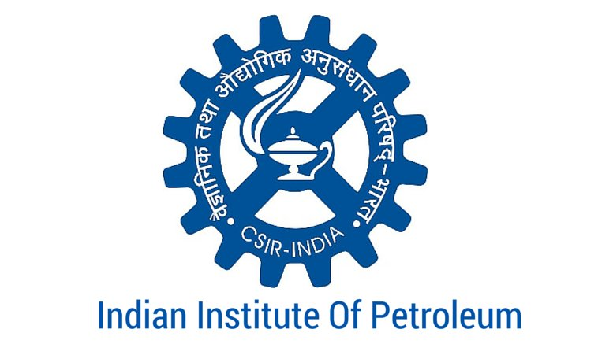

Indian Institute of Chemical Engineers
Dehradun Regional Centre
About IIChE
Indian Institute of Chemical Engineers (IIChE) is an apex professional body established for the Chemical Engineers in India. Founded a day before India won her freedom by Honorable Dr H. L. Roy along with his colleagues, IIChE functions with the sole goal of providing rostrum to aspiring chemical engineers to flourish in the future and to maintain the existing professional standards in the Chemical Engineering domain.
Today, IIChE works with 40 Regional Centres and around 60 Student Chapters throughout the country. IIChE is essentially a league of professionals from academic, research and industrial background that connect to peers who feel akin with the Chemical Engineering domain. It is also recognized by the Department of Science and Technology (DST), Government of India as a research organization. CHEMCON, the annual technical session which is organized at a national scale is held every year under the banner of IIChE.
Dehradun
Nestled in the mountain ranges of the Himalayas, Dehradun is the capital of Uttarakhand. It is one of the most beautiful resorts in the sub mountain tracks of India, known for its scenic surroundings. Said to be one of the oldest cities in India.Dehradun , the ‘Adobe of Drona’, is renowned for its natural resources, publishing services and particularly for its educational institutions. Under the British, Dehradun became an elite town with many a fine institutions like Forest Research Institute, Doon School and Welham Schools for girls and boys, many more, like the ONGC and Wadia Institute of Himalayan Studies, were added in time. Dehradun has now become a prominent tourist destination. Other institutions include the Indian Institute of Petroleum,National Institute for Visually Handicapped, Central Soil and Water Conservation Research & Training Institute, Oil and Natural Gas Corporation, Uttarakhand Space Applications Centre, Survey of India, Wadia Institute Of Himalayan Geology, Forest Survey of India (FSI), Indian Council of Forestry Research and Education (ICFRE), Indian Institute of Remote Sensing, Wildlife Institute of India and the Forest Research Institute.
Tourist Destinations:
- Tapkeshwar Temple
- Malsi Deer Park
- Kalanga Monument
- Laxman Siddh
- Chandrabani
- Guchhupani
- Forest Research Institute
- Tapovan, Santala Devi temple,
- Central Braille Press
- Wadia Institute of Himalayan Geology
Hill Stations:
- Mussoorie
- Sahastradhara
- Chakrata, Dakpathar

University of Petroleum & Energy Studies
University of Petroleum and Energy Studies (UPES) was established in the year 2003 with the mission to develop industry focused professionals with a global outlook in Energy and allied sectors and to inculcate integrative thought process among the students.
In the short time of 12 years, the University has proven its mettle and has credited itself to become one of the finest establishments in the field of research, consultancy and development activities in all the technical and managerial aspects of the Oil and Gas Industry. The University is now broadening its horizons with 34 industry centric B.Tech programs in the field of Energy, Infrastructure, Transportation, Information Technology and Legal Process. UPES is the first Asian University with energy programs accredited by the Energy Institute of United Kingdoms and is the only University in Asia to receive World Oil Award.
With the vision to become an Institution of global standing and to develop professionally competent talent, University provides all its students with exceptional opportunities, academic and co-curricular alike.
Indian Institute of Petroleum
 CSIR-Indian Institute of Petroleum (CSIR-IIP) is one of the leading constituent laboratories of the Council of Scientific & Industrial Research (CSIR). Established in 1960, the Institute is devoted to multidisciplinary areas of research and development in the downstream sector of hydrocarbon and related industry. It has dedicated experienced and qualified staff and is equipped with comprehensive state-of-art R&D facilities including pilot plants.
The Institute undertakes R&D work in areas of petroleum refining, natural gas, alternative fuels, petrochemicals utilization of petroleum products in IC engines and in industrial and domestic combustion. Institute also provides technical and analytical services to petroleum refining and related industry including technology transfer for developing novel, state-of-art technologies and products.
The institute maintains its leading position in conducting training programme for technical personnel from refining industry, petrochemical plants, automotive sector, power plants and other related user industries.
CSIR-IIP is committed to provide globally competitive technologies and services for hydrocarbon and related industries. This is achieved through total quality management and by anticipating and exceeding the expectations of customers through innovation, team work and commitment. The acquirement of ISO-9001 certification by the institute in 1998 and its accreditation to ISO:9001-2008 proves its commitment towards quality services and management.
ONGC-Dehradun
In the year 1956, ONGC has established its Head Quarters in the famous Building, Tel Bhawan(Patiala House), at Dehradun. ONGC is the premier exploration and Production Company in India and accounts for 90% of the exploration effort, established reserves and production of oil and gas in the country. ONGC have built an organization with fiscal, technical and managerial strength to match any large oil company in the world. It is thus obvious that ONGC would continue to be a major force in the Indian oil industry in the foreseeable future.
Today, ONGC is the flagship company of India; and making this possible is a dedicated team of around 33,000 professionals who toil round the clock in challenging geographies. It is this toil which amply reflects in the aspirations and performance figures of ONGC. The company has adopted progressive policies in scientific planning, acquisition, utilization, training and motivation of the team. At ONGC, everybody matters, every soul counts.
ONGC has a unique distinction of being a company with in-house service capabilities in all the activity areas of exploration and production of oil & gas and related oil-field services.
Needless to emphasize, this was made possible by the men & women behind the machine. Over 18,000 technically-competent experienced scientists, engineers and specialist professionals, mostly from distinguished Universities / Institutions of India and abroad form the core of our executive profile. They include geologists, geophysicists, geochemists, drilling engineers, reservoir engineers, petroleum engineers, production engineers, engineering & technical service providers, financial and human resource experts and IT professionals.
FRI Dehradun
 The Institute caters, in particular, to the research needs of the Indo-Gangetic plains of Punjab, Haryana, Chandigarh, Delhi and Western Uttar Pradesh, as Well as the U.P. Himalayas. Forest research at the FRI is organized under fourteen divisions.
The Institute caters, in particular, to the research needs of the Indo-Gangetic plains of Punjab, Haryana, Chandigarh, Delhi and Western Uttar Pradesh, as Well as the U.P. Himalayas. Forest research at the FRI is organized under fourteen divisions.
Established as Imperial Forest Research Institute in 1906, Forest Research Institute (FRI) Dehradun, is a premier institution under the Indian Council of Forest Research and Education (ICFRE). Styled in Greeko Roman Architecture by C.G. Bloomfield, the main building is a National Heritage which was inaugurated in 1929The Institute's history is virtually synonymous with the evolution and development of scientific forestry, not only in India, but over the entire Indiansub-continent. Set in a lush green estate spread over 450 hectares, with the outer Himalaya forming its back drop, the Institute's main building is an impressive edifice, marrying Greco-Roman and Colonial styles of architecture, with a plinth area of 2.5 equipped laboratories, library, herbarium, arboreta, printing press and experimental field areas for conducting forestry research, quite in keeping with the best of its kind anywhere in the world. Its museums, in addition to being a valuable source of scientific information, are a major attraction for tourists.